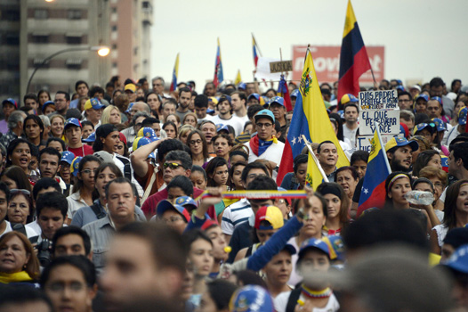
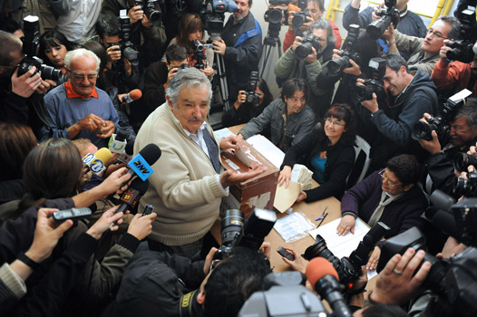

El nuevo milenio trajo grandes cambios para Estados Unidos. La presidencia de George W. Bush (2001- 2009) coincidió con el ataque a las Torres Gemelas, acontecimiento que redefinió la política exterior de ese país.
-
01
Los Estados Unidos en el siglo XXI
Open or CloseDebido a que la Unión Europea, Japón, China pasaron a ser sus grandes competidores en producción y exportaciones, Estados Unidos ha buscado adelantar más estrategias para conquistar mercados y para abaratar los costos de producción de sus mercancías. De allí que impulse la firma de tratados de libre comercio con distintos socios y que, además, se distancia de acuerdos internacionales como el protocolo de Kioto, sobre reducción del impacto medioambiental.
A nivel interno, Estados Unidos sufrió en el 2005 los impresionantes impactos del huracán Katrina. Vastas zonas entre los estados de Louisiana y Mississippi fueron golpeadas, en un desastre natural que provocó más de mil muertos.
En el campo económico, Estados Unidos vive desde el año 2008 una de las peores crisis financieras. Esta se originó en el derrumbe de la burbuja inmobiliaria, la crisis de las hipotecas basura (hipotecassubprime) y la consecuente quiebra de bancos y caída de la Bolsa de Nueva York.
01.1Los atentados del 11 de septiembre 2001
El 11 de septiembre de 2001, Estados Unidos fue blanco de múltiples atentados terroristas. Uno de estos ataques destruyó uno de los principales centros de gestión financiera, las Torres Gemelas del World Trade Center de Nueva York.
De esta agresión se culpó a la organización terrorista Al-Qaeda, liderada por Osama Bin Laden. Como respuesta, el presidente Bush declaró una cruzada contra Oriente Medio. Esta cruzada se expresó fundamentalmente en la invasión a países como Irak, que trajo el derrocamiento del régimen de Saddam Hussein y la permanencia de tropas norteamericanas en ese y otros países como Afganistán.
Osama Bin Laden, personaje central de los ataques a las Torres Gemelas. Su búsqueda y captura tomó casi diez años luego del 11-S.
Profundiza
01.2La respuesta a las nuevas amenazas
Luego de la desaparición de su enemigo histórico, el comunismo, Estados Unidos ha visto surgir o recrudecer nuevas amenazas, como el narcotráfico. Así mismo, ha incluido el fenómeno de las migraciones y el fortalecimiento del islamismo como riesgos para su seguridad.
El narcotráfico es un factor que determina las relaciones de Estados Unidos con los demás países americanos. Desde finales de los noventa y hasta el presente, ese país ha diseñado múltiples estrategias para contrarrestarlo. Las más destacadas han sido el Plan Colombia y el Plan Mérida (México y Centroamérica).
Para combatir las migraciones, particularmente aquellas que llegan desde Centroamérica, Estados Unidos ha reforzado las unidades policiales y militares que controlan la frontera con México. En 2007 construyó un muro desde Tijuana hasta San Diego. Actualmente, los migrantes representan cerca del 15 % de la población de ese país y garantizan gran parte de su producción; por lo tanto, el rechazo a esta población resulta en una compleja tensión.
01.3Consolidación
Actividades para consolidar lo que has aprendido en esta sección.
-
02
La nueva izquierda latinoamericana
Open or CloseEstados Unidos ha sido determinante en el destino político del continente americano. Durante la Guerra Fría logró alinear a la mayoría de los países latinoamericanos para enfrentar al comunismo. Desde que cayó el bloque soviético, los motivos que tienen Estados Unidos para ejercer su hegemonía son diferentes.
A raíz de la crisis de la deuda, ocurrida en los años ochenta y noventa, Estados Unidos impulsó la aplicación de un paquete de medidas económicas conocidas como el Consenso de Washington. Estas medidas implicaron un mayor endeudamiento para los países de la región y, en consecuencia, su empobrecimiento.
Los sectores más golpeados, entre ellos indígenas, campesinos agricultores y trabajadores urbanos, iniciaron fuertes movimientos sociales. Así mismo, surgieron figuras de tinte carismático que replantearon los ideales de la izquierda, ya sin la sombra de la Unión Soviética.
Las políticas neoliberales golpearon el eje central de la organización de la izquierda clásica latinoamericana: los sindicatos. Al flexibilizar las políticas de empleo y de contratación, aumentó el desempleo y la informalidad, así los sindicatos perdieron gran parte de su fuerza y capacidad de convocatoria.
Recuerda
Se entiende por izquierda política en América Latina, los movimientos o partidos políticos que tienen un pasado históricamente cercano a ideas socialistas o comunistas o con organizaciones populares de base y movimientos populistas. En esta medida entran en oposición a tendencias y partidos políticos tradicionales en busca de hacer la revolución o al menos impulsar profundas transformaciones sociales, políticas y económicas.
Los años noventa significaron una transformación importante de la izquierda latinoamericana: por una parte, se libró de la tutela de Rusia, que ejercía como adalid de las ideas socialistas; por otra, vivió el implante y difusión del neoliberalismo. Así surgió en los años noventa una nueva izquierda alejada de la ortodoxia marxista y más cercana a las realidades y modos de pensar latinoamericanos.
Presidentes de Unasur en 2008. El siglo XXI significó un giro a la izquierda en los gobiernos de buena parte de los países suramericanos, que buscaron conformar un bloque para poder asumir una relación menos asimétrica con EE. UU. Luego de años de gestiones diplomáticas, en marzo de 2011 surgió oficialmente Unasur, como un bloque político-económico de naciones suramericanas, constituido para tener mayor autonomía e incidencia a nivel mundial.
Menos de 15 años después de implantadas las reformas neoliberales, buena parte de los países latinoamericanos se encontró gobernada por partidos pertenecientes a la nueva izquierda, que surgieron como respuesta y en oposición al neoliberalismo y sus políticas expresadas en el Consenso de Washington. Venezuela, Ecuador, Brasil, Argentina, Chile, Bolivia, Uruguay, Nicaragua y Paraguay y diversos movimientos populares en México y los Andes dan cuenta de una nueva manera de hacer.
Comenzó a gestarse una resistencia desde la izquierda, como consecuencia de los efectos negativos de los programas de ajuste estructural promovidos por el FMI, el descrédito de los partidos tradicionales y la implantación de tratados de libre comercio en los años noventa, que en la práctica significaron la ruina de buena parte del aparato productivo industrial y agrícola, el aumento del endeudamiento externo y de las desigualdades sociales y la pobreza.
La nueva izquierda se caracteriza por:
- Abandonar tácticas e ideologías clásicas de izquierda revolucionaria marxista.
- Negociar con partidos tradicionales la aplicación de reformas.
- Aceptar la pluralidad de ideas. No existe una doctrina uniforme y cada país ha construido su agenda política ajustada a su propio contexto.
- Asume una política exterior independiente y autónoma del poder y los intereses de Estados Unidos, buscando constituir un bloque económico y político con el que pueda negociar de manera más favorable nuevas condiciones de inserción en el mercado y la política mundial, sin caer en una oposición radical abiertamente antinorteamericana.
La ecología, el ambientalismo, la soberanía alimentaria y las economías familiares forman parte de la agenda política de la nueva izquierda latinoamericana. Iniciativas relacionadas con agricultura urbana son alternativas valiosas para los habitantes de las ciudades, en tanto contribuyen a la soberanía alimentaria, al tiempo que les provee de alimentos frescos.
Profundiza
02.1La Revolución bolivariana en Venezuela
El coronel Hugo Chávez hizo su aparición pública en 1992, en un fallido golpe militar contra el gobierno de Carlos Andrés Pérez, quien gobernaba bajo una profunda crisis política y social que tuvo su punto máximo en 1989 con el "caracazo", una gigantesca protesta social contra las políticas de ajuste económico.
El apretón de manos entre el presidente venezolano Hugo Chávez y su homólogo colombiano Álvaro Uribe, durante la visita oficial del primero a Colombia en enero de 2009, fue uno de los pocos gestos de distensión entre los dos políticos, que se acusaron mutuamente de intentar romper la estabilidad en la zona.
Chávez fue detenido por dos años y durante ese tiempo convocó a los venezolanos a derrotar la corrupción de los partidos tradicionales y las políticas neoliberales. Basado en un discurso que evocó la figura mítica de Bolívar y el carácter antiimperialista de sus propuestas, rápidamente logró ganar simpatías entre la población excluida de los beneficios de la bonanza petrolera, pero que pagaba los costos del ajuste económico.
En 1999 Chávez asumió como presidente de Venezuela al ganar las elecciones por amplia mayoría y rápidamente inició una serie de reformas -comenzando por una nueva Constitución Política- para dar cuerpo a lo que denominó "Socialismo bolivariano", diferente al modelo soviético, en tanto que no suprimió el mercado, pero sí otorgó al Estado grandes poderes para ejecutar programas en contravía de los preceptos neoliberales.
Algunos logros y problemas del Socialismo bolivariano Logros Problemas Disminución de índices de pobreza y analfabetismo. Confrontaciones sin diálogo con una oposición vinculada a la clase social media-alta. Mejoramiento del sistema de salud público: médicos y subsidios en medicamentos. Medidas represivas en respuesta a problemas como inseguridad y acaparamiento de bienes. Aumento de empleo y del salario mínimo en proporciones antes no vistas. Asistencialismo y ayudas sin organización auténtica de las bases sociales. Luego de un intento de golpe de Estado fallido contra Chávez en abril del 2002, amparado en los grandes ingresos petroleros, este impulsó mecanismos autónomos de cooperación internacional, alianzas económicas y políticas, con los otros regímenes de izquierda de Latinoamérica, con miras a contrarrestar la influencia de los EE. UU. en el continente.
Un cáncer fulminante ocasionó la muerte a Hugo Chávez sin que alcanzara a posesionarse para su cuarto periodo; en su nombre Nicolás Maduro asumió la presidencia al salir victorioso en unas nuevas elecciones, con la idea de continuar la Revolución bolivariana.
Entre el 2013 y 2015 la agudeza de la confrontación política en Venezuela entre partidarios del régimen y opositores ha sido tal, que no permite establecer con certeza y claridad quién tiene la razón. Ambos bandos utilizan estrategias de desprestigio al contrario, sin importar el perjuicio que se le causa a la nación. El riesgo de una confrontación armada es latente y la dependencia de los precios del petróleo hace más difícil la posición del gobierno. En la imagen: protestas en Caracas, marzo de 2014.
02.2'Lula' da Silva, un obrero en la presidencia de Brasil
Obrero metalúrgico, sindicalista y sin título universitario, Luis Inácio 'Lula' da Silva ocupó la presidencia del Brasil entre 2003 y 2010. Consiguió llevar al país a ser la séptima economía más grande del mundo. Con su presidencia se inició el ciclo de gobiernos del Partido de los Trabajadores (PT), seguido por Dilma Rousseff.
El presidente 'Lula' da Silva camina en medio de la multitud asistente al II Foro Social Mundial, en Porto Alegre. Se aprecian también las banderas del PT (Partido de los Trabajadores), que llevó a 'Lula' al poder. Es un partido político fundado en 1980 por diferentes sindicatos brasileños de orientación socialista.
'Lula' fue un opositor de las dictaduras militares de los años sesenta y setenta en Brasil, por lo que fue encarcelado. Inició su carrera en la izquierda política en el Partido de los Trabajadores, criticando fuertemente la corrupción y las políticas de ajuste neoliberal iniciadas con Fernando Collor de Mello a principios de los años noventa.
'Lula' adoptó una línea política y económica de centroizquierda, sin llegar a plantear el socialismo como meta. Sin embargo, sí consideró la política social como prioritaria en su gobierno, con una serie de reformas graduales, nada radicales, como el aplazamiento o disminución moderada del gasto público, el fondo de lucha contra el hambre, la titulación de predios urbanos en favelas a familias y programas de asistencia a los drogadictos.
El crecimiento económico de Brasil durante la primera década del siglo XXI le garantizó a 'Lula' hacer elegir a su sucesora Dilma Rousseff, quien ha tenido que enfrentar graves escándalos de corrupción que le han mermado apoyo popular y por los cuales actualmente se encuentra suspendida de su cargo.
Principales hechos durante el mandato de 'Lula' da Silva
- Reducción drástica de la pobreza, la desnutrición y la mortalidad infantil, así como disminución del desempleo en el país.
- Aumento sin precedentes del salario mínimo: un 62 % en cinco años.
- Cobertura en educación, impulsando universidades públicas y programas de becas.
- Brasil lideró la creación de Unasur, como un modelo de integración de las naciones suramericanas.
- Deterioro dramático del medio ambiente, especialmente la devastación de la Amazonia y las fuentes hídricas.
Rouseff tuvo que afrontar graves problemas en la estatal petrolera Petrobras, que tiene una deuda de 135 mil millones de dólares y pérdidas en sus operaciones anuales de cerca de 7 mil millones de dólares, que buena parte se deben a casos de corrupción. En la imagen: protestas en Curitiba, marzo de 2015.
02.3El EZLN en México enfrenta a un gobierno de derecha
El Ejército Zapatista de Liberación Nacional (EZLN) surgió a la luz pública como una guerrilla indígena armada el 1 de enero de 1994, con la toma de San Cristóbal de las Casas, capital del Estado mexicano de Chiapas, el más pobre y olvidado del país. La toma armada de la ciudad significó un duro golpe a la política nacional que celebraba ese día el inicio formal del Tratado de Libre Comercio de América del Norte (NAFTA o TLCAN), entre México, EE. UU. y Canadá.
Recuerda
Los tratados de libre comercio (TLC) fueron, desde inicios de los años noventa, la estrategia que impulsó EE. UU para globalizar las economías y expandir el capitalismo. Cada proceso de negociación de estos tratados incluía la imposición de políticas económicas a los países firmantes, para poder acceder al mercado norteamericano libres de impuestos. Ello implicaba desde desmontes de subsidios, baja de impuestos, cambios en la política monetaria y laboral, hasta salvaguardas y garantías a las empresas, productos y ciudadanos norteamericanos.
Hoy México es uno de los países más violentos del mundo. El Estado se ha mostrado impotente para contener a los carteles de drogas, a pesar de haber incorporado a las fuerzas armadas en el conflicto y de contar con el apoyo norteamericano.
02.3.1El Partido Revolucionario Institucional (PRI)
A finales del siglo XX, además del levantamiento zapatista, México había enfrentado una crisis política y judicial provocada por el asesinato del candidato a la presidencia del PRI, Luis Donaldo Colosio (marzo 1994), que a su vez se agravó por el asesinato del secretario general del PRI, José Francisco Ruiz Massieu (septiembre 1994).
Semejante crisis llevó a que los partidos de oposición al PRI comenzaran a ganar espacios. El proceso electoral de 1999 enfrentó a los candidatos Francisco Labastida (PRI), Cuauhtémoc Cárdenas (Partido de la Revolución Democrática, PRD) y Vicente Fox (Partido de Acción Nacional, PAN). El triunfo de Vicente Fox en las elecciones presidenciales (2 de julio de 2000) puso fin a 71 años de gobierno del PRI. Inició un gobierno de privatizaciones e inversión extranjera, a lo que se sumó una creciente inseguridad ciudadana estimulada por el ascenso del narcotráfico, la crisis económica y el desempleo.
Enrique Peña Nieto fue elegido presidente de México como candidato del Partido Revolucionario Institucional (PRI) en 2012, recuperando la presidencia que estaba en manos del Partido de Acción Nacional (PAN). Peña Nieto ha tenido que enfrentar grandes escándalos de corrupción, crímenes como los de los 43 estudiantes de la Escuela Normal de Ayotzinapa en 2014 y la fuga del narcotraficante Chapo Guzmán en 2015.
El alcalde de la capital, Andrés Manuel López Obrador, del PRD, aparecía como el más firme candidato para ganar las elecciones presidenciales de 2006. No obstante, el vencedor fue el candidato del PAN, Felipe Calderón, aunque con una ventaja muy reducida sobre López Obrador.
En las elecciones presidenciales de julio de 2012, el candidato del PRI, Enrique Peña Nieto, se impuso al candidato de la izquierda, Andrés Manuel López Obrador. La izquierda acusó al PRI de coacción y compra de votos, y solicitó la anulación de los comicios. En agosto, el Tribunal Electoral rechazó la impugnación de las elecciones y Peña Nieto fue declarado presidente electo de México. Su victoria supuso el regreso del PRI al poder tras doce años de gobiernos del PAN.
02.3.2El Ejército Zapatista de Liberación Nacional (EZLN)
Inspirado tanto en principios comunitarios y de gobierno originarios de la tradición indígena mesoamericana, como en los ideales del líder campesino de la Revolución mexicana de inicios del siglo XX, Emiliano Zapata, el EZLN también asumió ideas de izquierda como el marxismo y el socialismo anarquista, logrando construir una propuesta política seductora y radical, pero sobre todo profundamente latinoamericana.
Líderes y simpatizantes del EZLN en Tlaxcala en 2002. El EZLN reivindicó, desde su fundación, la imagen y los ideales del líder agrario de la Revolución mexicana Emiliano Zapata. Como en otros países latinoamericanos, el problema agrario siguió latente con procesos intensos de concentración de la tierra en pocas manos. De ahí que el lema de "La tierra para el que la trabaja" siga vigente en nuestros días.
Aunque no ha llegado al poder en México, en buena parte porque desprecia el sistema político de la democracia republicana imperante, el EZLN se ha convertido en ejemplo para muchos movimientos alternativos del país y el mundo que buscan un mejor vivir, y su política de gestar pacientemente cambios profundos ha recibido la atención de toda la sociedad mexicana.
Ideas y propuestas del pensamiento zapatista
- Anticapitalista y antineoliberal.
- Defiende los derechos de los pueblos indígenas.
- Su propósito es construir una democracia auténtica, donde la autoridad reside efectivamente en los pueblos.
- Denuncia el colonialismo como matriz de la dominación económica y política que somete a Latinoamérica y convoca a la integración de las luchas de resistencia. El EZLN asume así un alcance supranacional.
02.4Consolidación
Actividades para consolidar lo que has aprendido en esta sección.
-
03
El desencanto con la idea de desarrollo: el "buen vivir"
Open or CloseA finales del siglo XX tomó fuerza en América Latina una crítica a la idea de desarrollo, bandera de la modernidad occidental. Esta crítica reivindicaba un papel protagónico de los saberes ancestrales propios de los pueblos indígenas. De aquí surge la idea de "buen vivir" o "vivir bien", que en Ecuador remite a la expresión en quechua "sumak kawsay" y en Bolivia a la expresión en aimara "suma qamaña".
La crítica a la modernidad trae implícita la crítica a la industrialización y al sistema capitalista, con la premisa de que el planeta está excesivamente industrializado, que los niveles de sobreproducción son muy altos y que, sin embargo, hay una pobreza excesiva. Para la tendencia del "buen vivir" el principal problema es el modo de vida capitalista, que ocasiona efectos ambientales dañinos para el planeta y para millones de personas excluidas de los beneficios y las posibilidades de una vida mejor.
La constatación del cambio climático y el calentamiento global, atribuidos a la emisión permanente de gases tóxicos y desechos industriales al aire, acrecentó las críticas al carácter antiecológico del sistema capitalista y motivó el auge de movimientos ambientalistas en todo el planeta.
03.1La idea de desarrollo
La idea de desarrollo surgió a final de la Segunda Guerra Mundial, a partir del discurso del presidente norteamericano Harry Truman, quien en 1949 señaló que los países pobres del mundo eran "subdesarrollados" en comparación con las naciones ricas, a la cabeza de las cuales estaba Estados Unidos. A partir de entonces, se esperó que todos los países del mundo marcharan por el mismo camino, en la misma dirección: el "desarrollo", solo que unos lo hacen despacio y otros van más rápido.
A partir de esta idea de desarrollo, se entendió que América Latina y las demás regiones "subdesarrolladas" del mundo debían seguir una serie de políticas e indicadores para alcanzar la condición de desarrollados; de este modo el desarrollo es una condición que se mide con criterios de carácter económico.
Políticas e indicadores del desarrollo
- Priorizar el aumento de la productividad y el crecimiento del PIB.
- Estimular el aumento del consumo generalizado.
- Aumentar la explotación de los recursos naturales de manera eficiente.
- Aplicación de rígidas políticas de restricción monetaria.
- Urbanización acelerada.
- Reemplazar la agricultura campesina por extensos monocultivos agroindustriales.
- Aplicar todo tipo de insumos químicos para aumentar la productividad de los cultivos, sin importar los efectos sobre la salud humana o la fertilidad de las tierras.
- Promover grandes construcciones de infraestructura y obras civiles, como autopistas, puentes, edificios, inmensas fábricas en función del flujo incesante y masivo de mercancías.
- Aplicación de todo tipo de tecnologías en diferentes áreas, pero especialmente en la vida cotidiana de los ciudadanos.
La fórmula para lograr que los países del mundo adoptaran este enfoque fue una amplia oferta de créditos a los países catalogados como "subdesarrollados". Estos créditos se canalizaron a través de organismos multilaterales: para ello se crearon el Fondo Monetario Internacional (FMI), el Banco Mundial (BM), el Banco Interamericano de Desarrollo (BID) y la FAO (Organismo de las Naciones Unidas para la Agricultura), entre otros muchos.
En América Latina, como en otros continentes, la mayoría de países pretendió seguir ese recorrido de progreso lineal, pero muy pocos lo lograron. Uno de los efectos de este intento ha sido el crecimiento de la deuda externa y la obligatoriedad destinana buena parte del Producto Interno Bruto para pagarla.
03.2El "buen vivir"
Desde la segunda mitad del siglo XX en América Latina comenzaron a oírse voces que ponían en tela de juicio los preceptos del desarrollo. A inicios del siglo XXI aparecieron con fuerza corrientes críticas del desarrollo, que planteaban alternativas sobre la base de una revisión extensa de sus efectos sobre el medio ambiente y las personas.
Recuerda
El "buen vivir" surge del pensamiento ancestral andino, de investigaciones académicas y de las prácticas de movimientos sociales a lo largo del continente. Recupera saberes y sensibilidades propias del mundo indígena y por ello otorga especial valor a la relación con la naturaleza.
Hay un fuerte contraste entre las ideas del desarrollo y del buen vivir en diferentes aspectos:
Desarrollo Buen vivir Saberes Científicos Prácticos y espirituales Forma de pensar Racionalismo Holismo Valores Bienes y dinero Conocimientos y principios éticos Idea de persona Consumidor, cliente En armonía con su entorno Idea de naturaleza Para ser explotada en beneficio del ser humano Para ser conservada y recuperada La constatación de la imposibilidad de cumplir la promesa del desarrollo y el progreso ilimitados radica en que el planeta Tierra no tiene la capacidad de producción, absorción y resiliencia para que toda su población llegue a los niveles de consumo de los "países desarrollados". Por ello surgió un nuevo paradigma que promueve la calidad de vida con valores distintos y basados en la conservación del equilibrio ambiental.
El pensamiento indígena fue decisivo en la constitución de este nuevo paradigma: la idea de desarrollo es vista como una imposición cultural de Occidente (Europa y EE. UU.) para continuar la explotación de los pueblos sometidos en beneficio exclusivo de Occidente.
La agricultura inca aprovechaba los suelos por medio de terrazas, sin destruir las laderas de las montañas. Hoy se retoma este tipo de agricultura en terrazas circulares, en Moray (Perú), como una muestra del "buen vivir" tradicional.
Características del "buen vivir"
- Representa una alternativa al desarrollo.
- Implica un cuestionamiento profundo a la modernidad y en especial a la fe en el progreso material.
- Prioriza el bienestar de las personas en un sentido amplio, más allá de su capacidad de consumo, del ser rico o pobre. Incluye aspectos culturales, afectivos y espirituales.
- No se concibe vivir mejor a costa de otras personas, del sufrimiento o la explotación de otros.
- Está contextualizado, en sintonía con cada pueblo, con su historia, sus condiciones y su contexto.
- Retoma la idea de "reciprocidad" como eje de las relaciones entre las personas y con la naturaleza. Esta idea está arraigada en la cultura andina desde los incas.
- Promulga la descolonización del pensamiento, de los saberes, así como la búsqueda de otra ética para reconocer y asignar valores.
A juicio de los ambientalistas, la minería a cielo abierto se constituye en uno de los mayores atentados contra la naturaleza y las posibilidades de vida de las personas. Según los desarrollistas, la minería se constituye en motor del desarrollo. En la imagen: minas de cinc y plomo en Cerro de Pasco, Perú.
03.3Rafael Correa y la "Revolución Ciudadana" en Ecuador
Durante buena parte de su historia republicana, Ecuador se caracterizó por ser un país rural, con una economía reducida, dependiente de las exportaciones de monocultivos agrícolas, poco moderno y escasamente industrializado. El final del siglo XX y los inicios del siglo XXI dejaron una fuerte inestabilidad económica y política, lo que causó protestas sociales contra las políticas de ajuste neoliberales que se realizaron en medio de escándalos de corrupción.
Rafael Correa lidera en Ecuador la "Revolución Ciudadana". Un programa de gobierno encaminado a revertir el modelo económico que había privilegiado a las empresas multinacionales con la otorgación de derechos y facilidades tributarias para explotar los recursos naturales. Negocios de agroindustria, minería e hidrocarburos han pasado al sector estatal o han renegociado sus términos de concesión.
En el 2007, Rafael Correa asumió la presidencia y rápidamente entró en sintonía con los gobiernos de izquierda de la región, prometiendo inclusión social, progreso, control al ingreso de las transnacionales y contra la corrupción. Este proyecto se inspira en ideales nacionalistas y liberales.
En la nueva Constitución Política de 2008, el movimiento del presidente Correa "Alianza País" impulsó una nueva estructura del Estado, con más instituciones de defensa de los derechos ciudadanos, vigilancia a la función pública y más capacidad para intervenir y regular la economía.
Recuerda
La mayor novedad del movimiento de Correa reside en la incorporación del concepto de "buen vivir" en reemplazo de la idea de "desarrollo". Este cambio tiene un significado profundo, pues implica abandonar los principios y preceptos característicos del modelo neoliberal y, en general, de las ideas desarrollistas.
Algunos logros y problemas de la "Revolución Ciudadana" en Ecuador Logros Problemas Incorporación del concepto "buen vivir". Estabilidad política a un país en crisis desde 1997. Oposición de las clases altas, si bien en menor proporción que en Venezuela, dado que también se han favorecido por la estabilidad económica y política. Inversión estatal en sectores estratégicos. Dificultades con movimientos indígenas, por falta de acuerdo en manejo de tierras: redistribución y explotación de recursos. Modernización de vías de comunicación y transporte fluvial, terrestre y aéreo. Amplio mejoramiento en calidad de vida: cobertura en educación, disminución de índices de pobreza, cobertura en servicios públicos y sanitarios. Los avances en la sociedad ecuatoriana se han visto golpeados por un terremoto que devastó parte de las ciudades costeras. El desafío para Rafael Correa será recuperarlas, lo que implica poner en marcha grandes planes de inversión y, probablemente, de endeudamiento.
03.4Consolidación
Actividades para consolidar lo que has aprendido en esta sección.
-
04
Los gobiernos de centro-izquierda
Open or CloseAlgunos países de América Latina han optado por modelos de izquierda moderada. Es el caso de Argentina, Chile, Uruguay, Paraguay y Nicaragua. Se caracterizan por estar en contra de las políticas neoliberales, promover algunas reformas sociales y económicas; sin embargo, mantienen un modelo económico capitalista (propiedad privada, negociación con multinacionales). Por tal motivo, se los denomina como gobiernos de centro-izquierda.
04.1Argentina, de la crisis del "corralito" a las políticas de centro-izquierda
Argentina ha padecido periodos de profundas crisis económicas desde los años ochenta hasta la primera década del siglo XXI, acompañadas por crisis sociales y políticas. A principios del siglo XXI (1999-2002) fue una situación particularmente aguda: una economía hecha trizas generó una crisis institucional y la sucesión de cuatro presidentes en un término de dos meses.
Carlos Menem, presidente argentino entre 1989 y 1999, asumió un país con inflación desbordada; para controlarla aplicó juiciosamente los programas de ajuste: privatización masiva de empresas estatales, reducción de aranceles a importaciones, libertad de precios, aumentó el IVA y estableció una convertibilidad 1 a 1 del peso con el dólar. Estas medidas condujeron a la profunda crisis del 2001. En la imagen: Carlos Saúl Menem, a la derecha, junto a su sucesor Fernando de la Rúa.
Causas de la crisis económica argentina 1999-2002
- La caída del PIB.
- El desempleo desbordado, en todas las áreas.
- La escasez de alimentos, por la caída de la producción nacional, debido a los altos precios de insumos y de costos de producción.
- El aparato productivo casi paralizado, por la baja en las ventas al consumidor (porque la gente queda desempleada y no tiene con qué comprar) hace que la producción se frene, ya que hay inventarios sin vender.
- La corrupción generalizada.
- El sistema bancario colapsado, debido al crecimiento de créditos sin garantía y el posterior incremento de la cartera morosa. Los deudores no pudieron cumplir con sus obligaciones, al tiempo que los ahorradores exigían sus ahorros. Los bancos no tenían como responder.
- Desde inicios de la década de los años noventa, Domingo Cavallo, ministro de Economía, decretó la paridad del cambio de la moneda local con el dólar (1 a 1), pero la realidad económica del país era otra: la moneda argentina no valía lo mismo. Esta medida buscaba frenar la inflación, que había alcanzado niveles increíbles de más del 2000% anual, consistía en atar el valor del peso al dólar. Sin embargo, la combinación de factores arriba descritos, hizo que la economía argentina no pudiera sostener ese cambio.
Ante la crisis económica y el descontento social existentes, en el 2001 el gobierno de decidió aplicar una medida conocida como el "corralito", que limitó el uso del dinero que los argentinos tenían en los bancos. La restricción afectó a la clase media y la furia popular llevó a la renuncia del presidente sucesor de Menem, Fernando de la Rúa, a quien le siguió Fernando Duhalde.
Duhalde convirtió las deudas en dólares a pesos a razón de 1,40 pesos por dólar, pero las consecuencias de este conjunto de medidas fueron el empobrecimiento de buena parte de la población, el aumento del desempleo y la devaluación (el dólar triplicó su precio en las primeras semanas).

El "corralito" generó una reacción descomunal de la población en contra del gobierno y de los bancos. Las consecuencias de esta situación de crisis económica y política, fue un nuevo estallido social de grandes proporciones. El "corralito" restringió la liquidez monetaria y ahogó la economía al romper la cadena de pagos, lo que le dio un golpe de gracia a la economía informal, que depende de ese movimiento de dinero para subsistir.
Recuerda
La sucesión de presidentes luego del "corralito" financiero fue así:
- Fernando de la Rúa (10 dic 1999-21 dic 2001): impuso la convertibilidad peso-dólar, creó el "corralito".
- Federico Ramón Puerta (21-23 dic 2001): presidente provisional.
- Alfonso Rodríguez Saá (23-30 dic 2001): declara la cesación de pagos de la deuda pública, pero no abandona la convertibilidad.
- Eduardo Camaño (30 dic 2001-2 ene 2002).
- Eduardo Duhalde (2 ene 2002-25 mayo 2003) promulga la Ley de Emergencia Pública y Reforma del Régimen Cambiario, que deroga la convertibilidad.
El inicio del siglo XXI no era halagüeño para la economía argentina. Se requería un viraje en la política económica que pusiera su atención en las necesidades e intereses de la población empobrecida, resurgió la izquierda peronista, representada en el 2003 por Néstor Kirchner.
Recuerda
El peronismo en el que se inspiró Néstor Kirchner, se caracterizó por ser una corriente populista latinoamericana, basada en una comunicación política cercana a las capas populares urbanas y un proyecto político nacionalista, que defendió los derechos de los trabajadores y los sectores sociales empobrecidos, pero al tiempo, promulgó leyes favorables a los intereses de la burguesía nacional.
Néstor Kirchner y su esposa Cristina Fernández guiaron el gobierno argentino en la última década, hasta el año 2015. Los esposos Kirchner impulsaron medidas contrarias al modelo neoliberal, como la nacionalización de empresas, la oposición a las áreas de libre comercio y la cesación de pagos de la deuda externa. No obstante, durante sus mandatos se registraron actos de corrupción y enriquecimiento que provocaron el nuevo ascenso de la derecha, con Mauricio Macri.
Néstor Kirchner asumió la presidencia de Argentina en 2003, en representación del peronismo. Como parte de su programa de gobierno, promovió la devaluación de la moneda, controló la subida de los precios (inflación) y se concentró en el objetivo de pagar la deuda externa. Se declaró abiertamente antineoliberal y contrario a la política norteamericana de un área de libre comercio continental. Estimuló la integración del Mercosur y se opuso a la firma de tratados de libre comercio.
04.2Uruguay sorprende al mundo
La República Oriental del Uruguay estuvo a comienzos del siglo XXI gobernada por el partido Frente Amplio, una organización política de izquierda que se define como "antioligárquica y antiimperialista", y cuyos militantes provienen de sectores sindicales e intelectuales. Dos hombres han estado a cargo el gobierno en la última década: el médico oncólogo Tabaré Vázquez (2005-2010 y 2015-2020) y el sindicalista José 'Pepe' Mujica (2010-2015).
El balance de los dos primeros periodos de gobierno del Frente Amplio es contradictorio, en términos macroeconómicos es satisfactorio, al igual que en la imagen internacional del país, pero en lo interno se observan diferentes críticas.
En lo económico, el país obtuvo un crecimiento sostenido por encima del promedio de la región, basado en los buenos precios de los productos agrícolas. Pero los críticos del gobierno desaprueban la política de rebajas tributarias a las empresas extranjeras que se instalen en el país; esta política ha sido impulsada para mantener controlado el desempleo, que es de los más bajos del continente.
La popularidad del expresidente 'Pepe' Mujica fuera de su país es innegable; su estilo humilde y sus políticas progresistas le han ganado el respeto de amplios sectores políticos en el mundo. Se hizo conocer como el presidente más pobre del mundo, por su estilo de vida austero y porque no dejó de manejar su viejo carro particular, además siempre se presentó en público al margen de los rígidos protocolos tradicionales.
Aunque Mujica hizo que su país fuera el primero en el mundo en legalizar el uso de la marihuana, aprobara una polémica ley de despenalización del aborto y el matrimonio entre personas del mismo sexo, lo cual se consideran medidas bastante progresistas, no pudo evitar que crecieran problemas como la inseguridad, el déficit fiscal y la inflación. Hoy en día, Uruguay es uno de los países más costosos de Suramérica. Esto se convierte en el principal reto de Tabaré Vázquez en su segundo mandato.
04.3En Paraguay hace frente al poder tradicional
Paraguay vivió una corta primavera progresista (2008-2012) bajo el gobierno del exobispo Fernando Lugo. Su triunfo fue toda una hazaña para vencer en un país que ha sido gobernado por un solo partido político (el Colorado).
El 22 de junio del 2012 el Congreso de la República, en un juicio relámpago, destituyó a Fernando Lugo del cargo de presidente. Para ello, se aprovechó un extraño incidente en el que l fallecieron 11 campesinos y 6 policías durante una supuesta toma de tierras, ante lo cual el Congreso acusó al presidente por "mal desempeño en sus funciones". El poder volvió al partido Colorado; no obstante, Lugo fue luego electo senador hasta el 2018.
Los comienzos del siglo XXI fueron años difíciles para el país: sucesivas crisis económicas y políticas, una joven y frágil democracia (surgida tras la dictadura de Alfredo Strossner que gobernó entre 1954 y 1989), instituciones acostumbradas a manejos unipersonales y pugnas internas en la cúpula política, de las que no escaparon los militares, sintetizaban un periodo agitado.
En ese contexto, Lugo salió electo como presidente del país. De familia humilde, Lugo había sido perseguido y exiliado durante la dictadura de Strossner. En 2008 obtuvo permiso papal para dejar el compromiso religioso y asumir la presidencia de su país al frente de una agrupación política que recogió los reclamos de los campesinos sin tierra y los sindicatos urbanos.
El gobierno de Lugo fue conservador en lo económico y liberal en lo político y social. Mantuvo las medidas económicas de sus antecesores, acrecentó la deuda externa pero en proporciones responsables, mantuvo la devaluación de la moneda para darle competitividad a las exportaciones, pero no modernizó el aparato productivo y defendió la industria nacional. Hizo una política de defensa de los derechos humanos y ampliación de los derechos económicos y sociales, sobre la base de mejores ingresos fiscales originados en una renegociación de la venta de energía eléctrica a Brasil.
Lugo, tras ser sometido a un juicio político fue destituido por el Senado y sustituido por Federico Franco, del Partido Liberal Radical Auténtico (PLRA). El procedimiento empleado para la destitución de Lugo suscitó las críticas de la mayoría de los países latinoamericanos y supuso la suspensión temporal de Paraguay de Mercosur y Unasur. En abril de 2013, el Partido Colorado recuperó el poder con la victoria de su candidato, Horacio Cartes, en las elecciones presidenciales.
04.4Consolidación
Actividades para consolidar lo que has aprendido en esta sección.
-
05
Competencias
Open or ClosePon a prueba tus capacidades y aplica lo aprendido con estos recursos.
-
Fin de unidad:
Open or Close
repaso